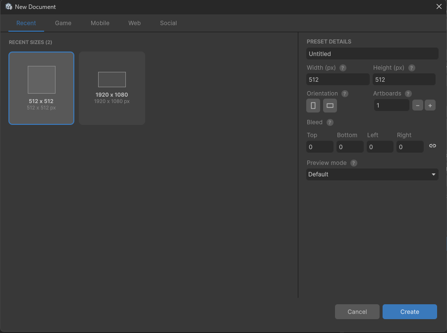
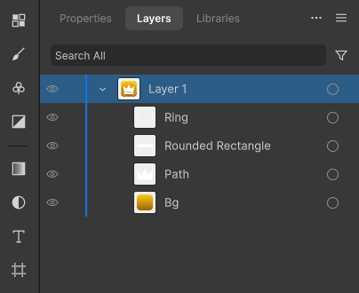
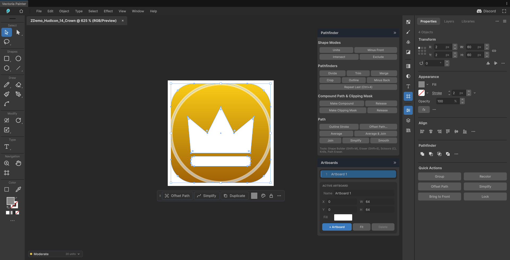
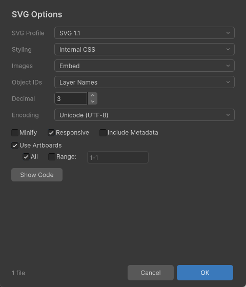
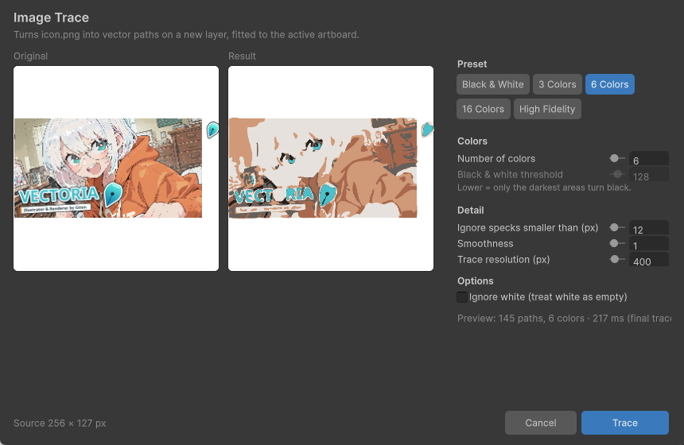
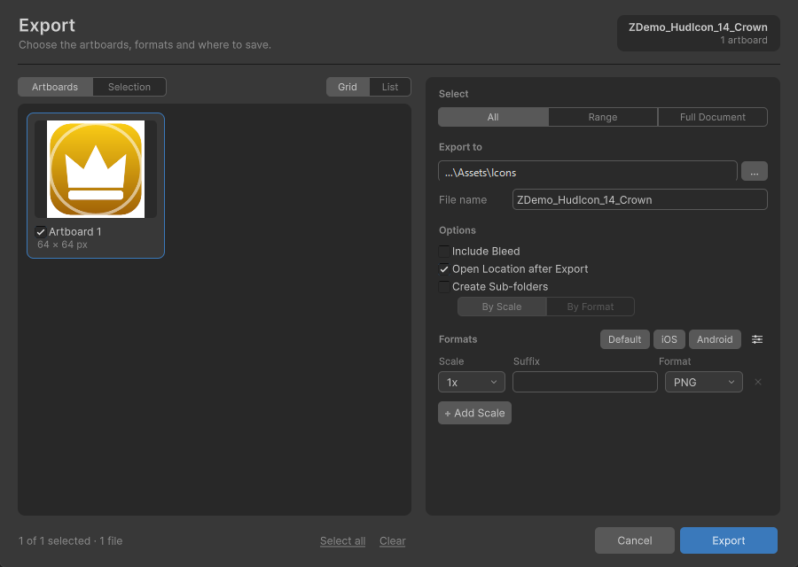

Documents, Artboards and SVG
Layers, artboards, SVG, image trace and saving.
A .vpaint document holds layers of shapes and one or more artboards. This page covers how to organise them, bring SVG and bitmaps in, and save.
New document
File › New Document opens the size picker. Tabs hold presets: Recent, Game (square sizes from 32 to 2048 px), Mobile (phone and tablet screens and store icons), Web and Social. Or type a width and height, choose portrait or landscape, set how many artboards to start with, and add bleed (extra margin around the artboard, mostly for print; leave it at 0 for game art).

Layers and groups
Shapes live on layers, and layers are stacked from bottom to top. Open the Layers tab to see them. The top of the list is the front. Each row has an eye to show or hide it, and the buttons at the bottom of the panel move the selection up or down, add a layer and delete one.

- Group the pieces of one part (an eye, a button) with
Ctrl+Gor the Group button in Properties. A group moves and scales as one. - Name shapes with a
Part_Rolepattern, for exampleEye_L_Iris, so you can find parts in the list. The names also become object IDs when you export SVG. - Use the search box at the top of the panel to find a shape by name.
Artboards
An artboard is the rectangle of the canvas that you later show as one image. A document can have many, for example one icon per artboard, or variants of one icon. Open the panel from Window › Artboards.

- + Artboard adds one, Fit resizes it to the artwork, and Delete removes it.
- Set the name, position (X, Y), size (W, H) and background fill of the active artboard in the same panel.
- With the Artboard tool (
Shift+O) drag on empty canvas to add one, or drag an artboard to move it. - Switch artboards with the picker in the help bar at the bottom or in Properties.
Each artboard is shown as its own image in the game and has its own Asset Type in the importer (for example UI Vectoria). See Importer.
SVG
- Import:
File › Import SVGbrings an SVG in as editable shapes. - Export:
File › Export › Export As SVGwrites the document, or the artboards you pick, back out as SVG. A dialog sets the options.

Placing and tracing bitmaps
File › Place Image puts a bitmap on the canvas. To turn a bitmap into vector shapes, use Object › Image Trace › Make. Pick a preset (Black & White, 3, 6 or 16 colours, High Fidelity) and adjust the number of colours, how small a speck (a tiny island of colour) can be before it is ignored, smoothness and the trace resolution. The preview shows the result before you commit, and the traced paths go onto a new layer fitted to the active artboard.

Exporting images
You do not need to export to use a .vpaint in your game. Use File › Export only when you want an image file, such as a PNG for a website or an SVG to share. Pick the artboards, the folder, and the scales (1x is the artboard size, 2x and 3x make larger copies for high-density screens). The iOS and Android buttons fill in scale sets for those platforms.

Saving
File › Save (Ctrl+S) writes the .vpaint in place, and Save As (Ctrl+Shift+S) makes a copy. A saved document re-imports automatically and updates every image that uses it. Closing a tab with unsaved changes asks whether to save.